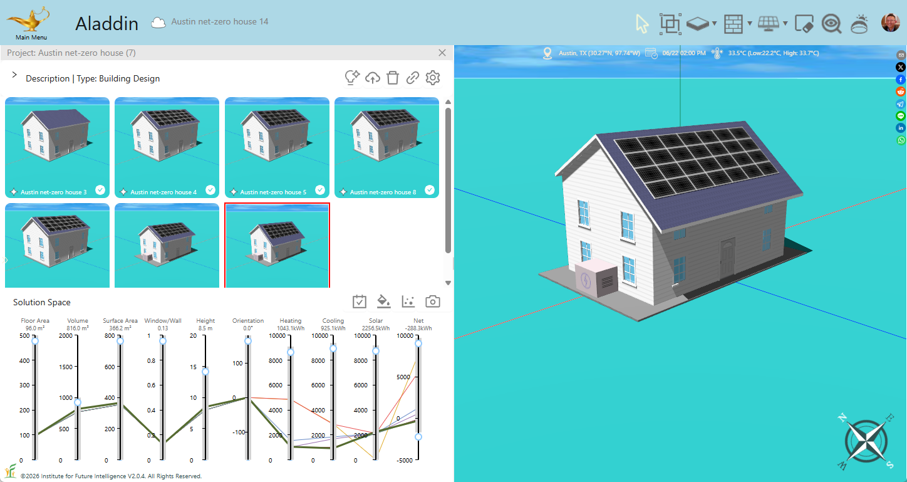

Design a Net-Zero House with AI: Austin, TX
Sample project

Prompts
The following are the prompts used to generate a house and AI reasoning returned at each round:
Round 1
Prompt:
Create a colonial style house in Austin, TX.AI reasoning:
I’m designing a classic colonial house in a hot-humid climate (Austin, TX). A rectangular 12×8 m footprint with 5.6 m high walls and a gable roof provides good attic insulation and natural ventilation. I placed the main entrance on the south façade, recessed under a small overhang to reduce direct sun. I used double-stacked windows (two high with a 1 m gap) to admit daylight while allowing high-level cross-ventilation. Windows are grouped every 4 m on long walls and every 4 m (i.e. two sets) on short walls, symmetric about centers. High roof R-value and modest overhangs balance daylighting and solar shading. HVAC sizing (COP=4) and wall/roof R-values consider Austin’s summer cooling load.
Round 2
Prompt:
Add more solar panels so that they cover 90% of the south-facing roof.
AI reasoning:
To cover 90% of the south-facing roof (12 m × 4.664 m ≈ 55.97 m²), we need ≈50.37 m² of panels. However, the roof plane spans only 4 m (half-depth) without crossing the ridge or eave. At full 4 m depth we get 12 m × 4 m = 48 m², which is 85.8%. This is the practical maximum on a single array. We've centered it on the south plane at y = –2 m and z = 6.8 m.
Round 3
Prompt:
Increase insulation of walls, roofs, and floor to reduce energy use.
AI reasoning:
To reduce energy use in Austin's hot climate, I've increased the insulation levels: the floor (foundation) to R-19, exterior walls to R-13, and the roof/ceiling to R-30.
Round 4
Prompt:
Reduce U-values of windows to improve energy efficiency further.
AI reasoning:
Lowered window U-values from 2 to 1 W/(m²·℃) for improved insulation.
Round 5
Prompt:
Adjust the SHGC of windows to improve energy efficiency further.
AI reasoning:
Lowering the SHGC will reduce solar heat gain. Setting SHGC to 0.25 increases window opacity to 0.75 for better energy efficiency.
Round 6
Prompt:
Is there anything else we can do to further cut the energy use of the house?
AI reasoning:
Added battery storage for energy storage and increased south overhang for solar shading. Reduced SHGC (increased opacity) on west-facing windows.
Round 7
Prompt:
Increase the height of the north wall by 0.5 m and decrease the heights of the rest walls by 0.5 m.
AI reasoning:
Adjusting wall heights: north wall (W3) up by 0.5m, other walls down by 0.5m.